A visual history of UK economics consultancy, drawn from a curated firm catalogue, filed accounts and 8,293 Companies House events.
Walk past 199 Bishopsgate on a weekday morning and you pass RBB Economics' registered address. Nothing on the door explains the economics behind the firm. The firm's FY2025 accounts do: 18 LLP members on average, average discretionary profit per member above £3m and a largest profit entitlement of £5.77m.
The series is built on numbers like these. They are large, verifiable and buried in accounts that few people outside the trade would think to open.
RBB is one firm in a specialist trade serving legal, regulatory and policy work. The project catalogue covers 90 firms associated with UK economics consultancy; it is curated, not a census. In the explorer, 30 selected reporting entities with positive revenue observations report £2.4415bn, including net revenue for AlixPartners UK. The figures are the selected observations in the July 2026 snapshot, with year-ends ranging from July 2024 to December 2025. They include overseas operations and non-economics work inside broad and litigation consultancies, so the total is neither sector revenue nor a market floor. Original filing pages
Cebr reported sector revenue of £1.53bn for 2016/17 and historical average growth of 11.3% over three years. Extend that old rate mechanically for eight years and the result is £3.60bn for 2024/25. This is the author’s scenario, not Cebr’s forecast or a bound on the current market. The firms advise competition authorities, law firms, regulators and governments on mergers, regulatory proceedings and litigation. Filings and case records document much of that business-to-business work.
UK-registered firms file at Companies House in Cardiff. The accounts become public, indexed and free. The May 2026 research snapshot contains 8,293 filing events, including 1,664 entries classified as accounts.
A 90-firm public catalogue, grouped by what each firm does and sized where a checked revenue figure is available.
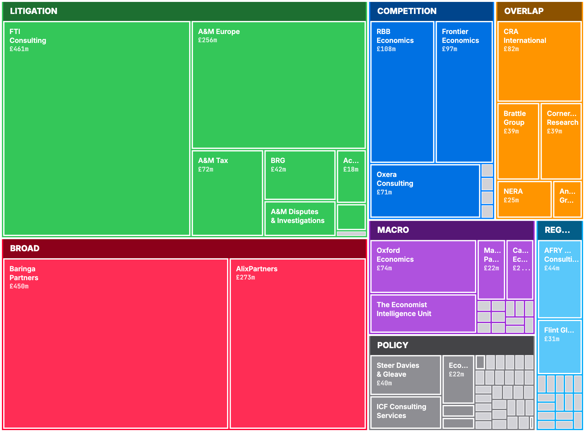
The Companies House-tracked database has positive revenue figures for 30 selected reporting entities in the July 2026 snapshot. Of these, 28 exceed £5m. Year-end, geography and accounting scope vary across the rows. The wider catalogue includes practices and entities without a separately reported revenue line. Part 5 follows that long tail.
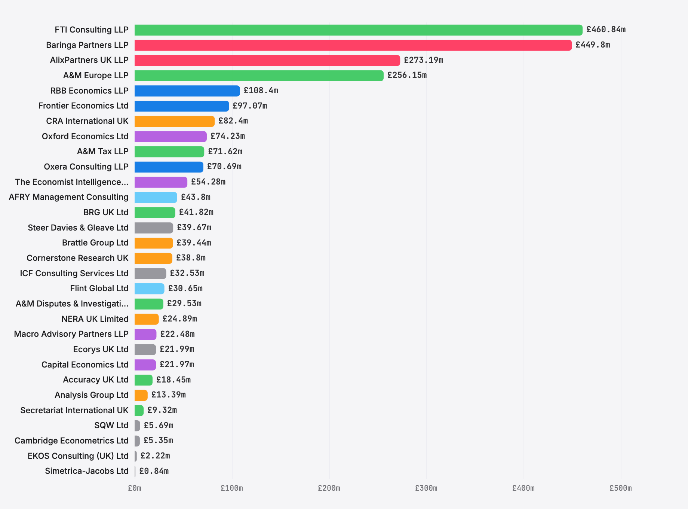
Four giants sit above £250m. FTI Consulting LLP is the largest measured row at £461m for the 12 months to March 2025 (filed accounts). Its £550m comparative covers a 15-month transition from 1 January 2023 to 31 March 2024, so it is not directly comparable year on year. Baringa Partners follows at £450m, AlixPartners UK at £273m in net revenue after client expenses and disbursements, and A&M Europe at €301m (~£256m). All four are multi-practice advisers. Economics sits beside restructuring, forensic accounting or management consulting; the bundle supplies the scale.
The selected specialist rows include RBB Economics at £108m, followed by Frontier at £97m, CRA’s UK business at £82m, Oxford Economics at £74m and Oxera at £71m. Those figures describe the reporting entities and groups listed in the chart.
A middle tier runs from roughly £22m to £44m. It mixes US-parented firms, European subsidiaries, transport and policy specialists and macro shops: AFRY, BRG, Steer, Brattle, Flint Global, A&M Disputes, ICF, NERA, Cornerstone, Ecorys, Macro Advisory and Capital Economics.
Cornerstone Research files in dollars. Its FY2025 turnover of $49.7m becomes £38.8m at the project’s fixed £0.78/$ rate, displayed as about £39m. Below it come Accuracy, Analysis Group, Secretariat, SQW, Cambridge Econometrics and a few smaller or older rows. Firms outside the ranking lack a revenue observation in this selection.
From loss-making to highly profitable. The same industry contains both extremes.
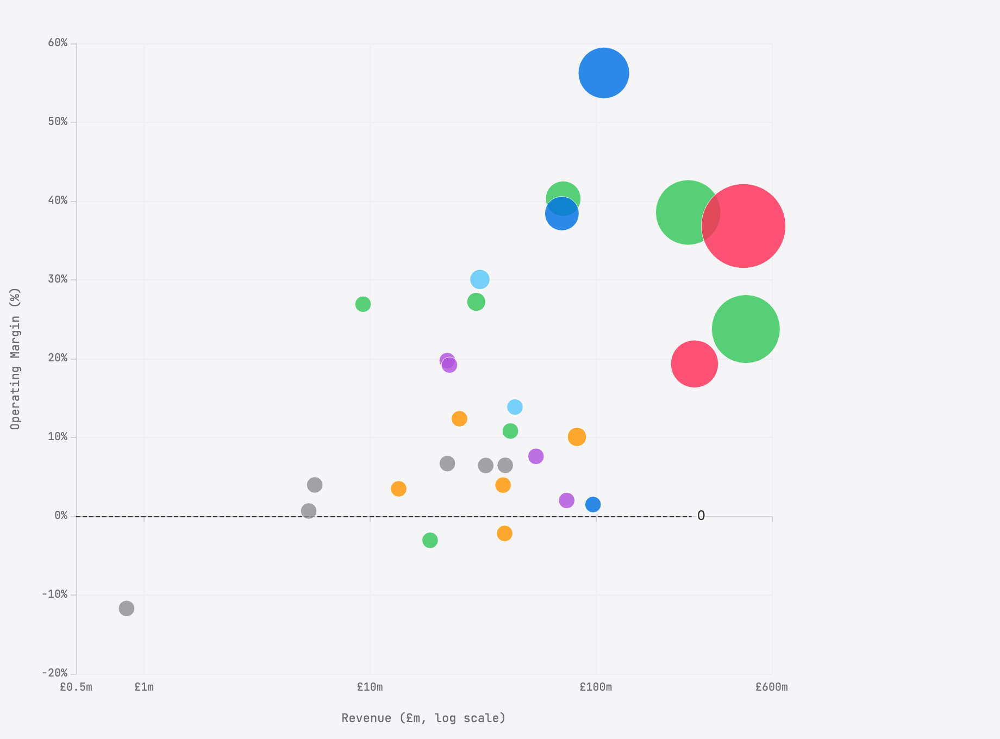
RBB sits highest on the margin axis. Its operating margin is 56 per cent on turnover of £108m. Oxera’s operating margin is 38 per cent on £71m, and Frontier’s is about 1.5 per cent on £97m. The reporting scopes and remuneration conventions are different.
Oxera, Baringa, A&M Europe, A&M Tax and Flint Global sit at roughly 30 to 40 per cent. They combine substantial revenue with relatively high reported operating margins.
Simetrica-Jacobs and Accuracy sit at the bottom of the disclosed-margin rows. Simetrica-Jacobs is at a negative 11.7 per cent margin, Accuracy at negative 3.1 per cent, and Brattle at negative 2.2 per cent. The lowest positive margins are Cambridge Econometrics at 0.7 per cent, Frontier at 1.5 per cent and Oxford Economics at 2 per cent.
Frontier’s thin operating margin needs to be read with its ownership structure in mind. The firm describes itself as employee-owned. The three loss-making rows are Simetrica-Jacobs, Accuracy and Brattle, with operating losses of £0.1m, £0.6m and £0.9m respectively. Every other plotted firm reported an operating profit.
A caveat on comparison. The chart uses operating profit and revenue from each firm’s accounts. RBB’s 56.3% and Oxera’s 38.4% are both calculated before the allocation of discretionary profit. Further down its income statement Oxera charges £8.3m as members’ remuneration. Discretionary profit divided by turnover gives RBB 55.6%, Baringa 36.0% and Oxera 26.5%. On this basis the RBB–Oxera gap widens from 18 to roughly 29 percentage points. These lines reflect accounting and remuneration conventions as well as different businesses.
Reported turnover for Frontier, Baringa, CRA’s UK business and RBB. The chart shows years checked against filed accounts.
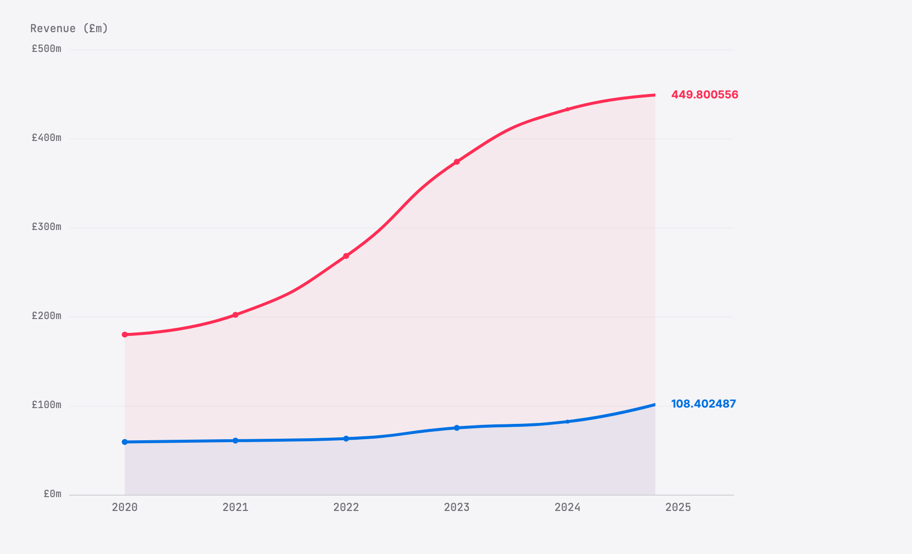
The firm says Derek Ridyard, Simon Bishop and Simon Baker established RBB in 2002 with 16 people. The filed accounts plotted here start in FY2020 at £59m and reach £108m by FY2025.
Baringa was already larger than RBB by FY2020. It crossed £200m in FY2021 and reached almost £450m in FY2025. Average membership rose from 98 in FY2021 to 180 by FY2024, then 178 in FY2025. Over FY2021 to FY2025, filed turnover climbed from £201.9m to £449.8m.
The revenue line measures growth in the reporting group. The filings do not isolate the contribution of organic growth or geography. The FY2022 profit spike included £74.4m of other operating income in the FY2023 comparative, separate from turnover. The filed accounts reveal two different businesses.
Companies House records Frontier’s incorporation on 15 April 1999. Simon Gaysford, one of the founders, describes giving equity to colleagues. Its FY2025 filed turnover reaches £97m.
CRA’s UK entity reports £82.4m for FY2024. The Frontier and CRA buttons reveal the checked years available for those firms.
RBB and Baringa, side by side, 2021 to 2025. And then the arithmetic underneath.
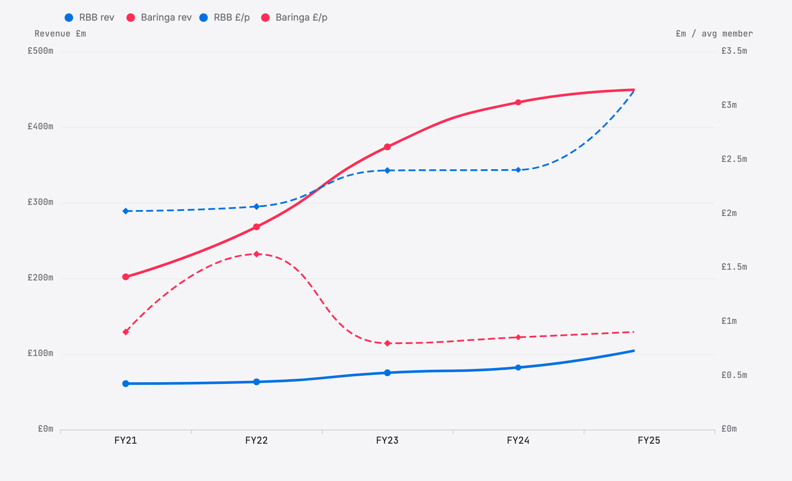
Both are partner-owned London LLPs, both disclose FY2021-to-FY2025 figures and both grew quickly. The resemblance ends there.
RBB Economics runs a concentrated partnership. Average membership fell from 20 in FY2021 to 18 in FY2025, while revenue climbed from £61m to £108m. Discretionary profit per average member rose from £2.02m to £3.35m, a 65 per cent increase. A larger pool was available across fewer members.
Baringa Partners is the mirror image. Average membership expanded from 98 to 178 as revenue rose from £202m to £450m. More owners share a larger pool.
Frontier Economics takes the employee-ownership route. The firm’s founding account describes giving equity to colleagues in 1999.
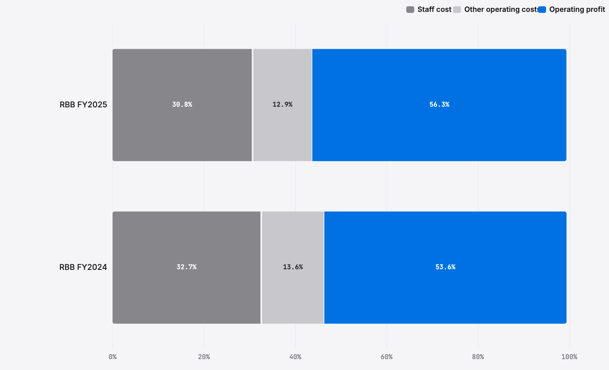
Growth is only the first layer. The next chart divides each pound of RBB’s filed revenue among staff costs, depreciation, other operating charges and operating profit.
At RBB, of each FY2025 revenue pound, about 31 pence pays staff, one penny covers depreciation and 12 pence covers other operating charges, leaving 56 pence of operating profit. After interest and tax, the £60.2m discretionary pool amounts to £3.35m per average LLP member. The amount available to each member depends on the allocation.
Frontier reverses the picture in its reported margin. Its FY2025 accounts record £1.4m of operating profit on £97.1m of turnover. Frontier calls itself employee-owned. The operating profit line gives only one part of the picture of how staff and shareholders are rewarded.
CRA’s UK entity reports a ten per cent operating margin in its FY2024 accounts. That need not mean inefficiency. The figures cover a UK subsidiary of a wider group.
The first private-equity marker in this project file is 2014. More followed.
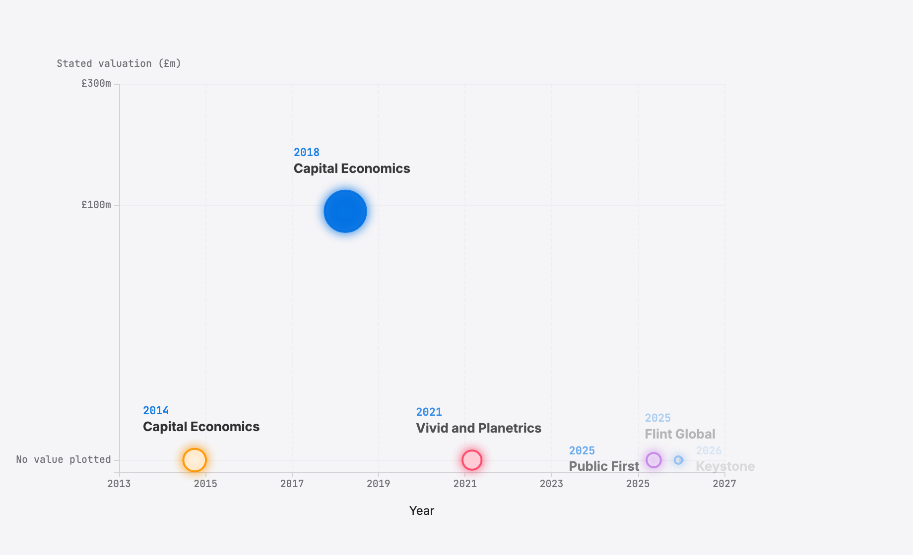
Open markers in the bottom band have no plotted valuation.
The project records LDC buying a minority stake in Capital Economics in 2014. Four years later Phoenix Equity Partners acquired a controlling stake, valuing the whole business at about £95m. Roger Bootle retained a significant stake. LDC reported a 2.5x money multiple and a 43 per cent internal rate of return.
In December 2025 Cinven agreed a majority investment in Flint Global. The announcement gave no financial terms. The group accounts report completion in 2025.
The deal file also records Public First’s May 2025 announcement of its agreement to join Stonehaven. Capital keeps arriving. Precise public valuations are scarcer than deal announcements.
Charges registered by selected firms. Here is whom the public register names.
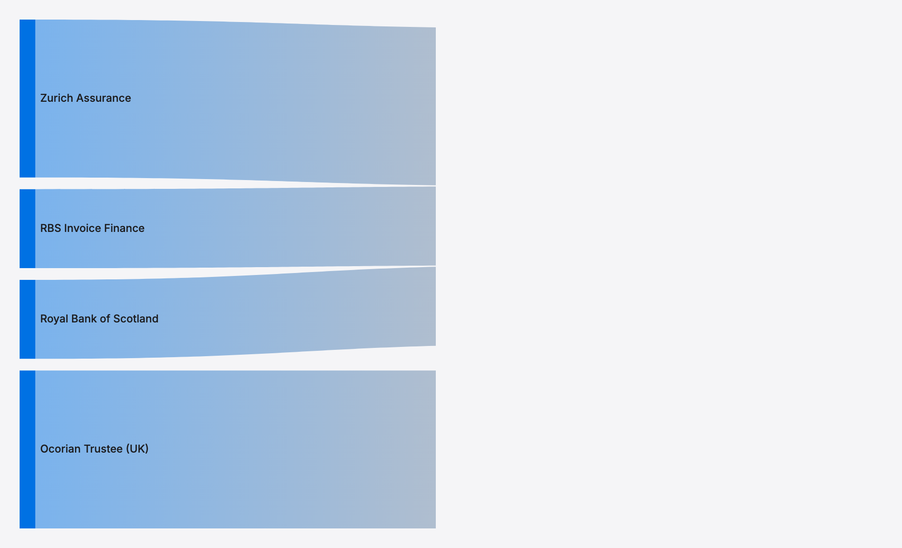
The register identifies parties entitled to a charge, which can include lenders, landlords and security agents. “Outstanding” is the registration status. The entry gives no outstanding loan balance.
RBB Economics has entries in favour of RBS Invoice Finance and the Royal Bank of Scotland, and two in favour of Zurich Assurance. The Zurich entries are rent deposits.
Capital Economics is the oddity. Its later charges name Ocorian Trustee (UK) Limited, trading as Nordic Trustee (UK), as security agent. Charges in favour of Glas Trust Corporation Limited, created between April and June 2018, were marked satisfied in March 2026. The Ocorian charges were created in November 2024 and January 2025. Those entries establish the dates and parties named on the security.
Average membership in two LLPs and selected career moves and statutory appointments.
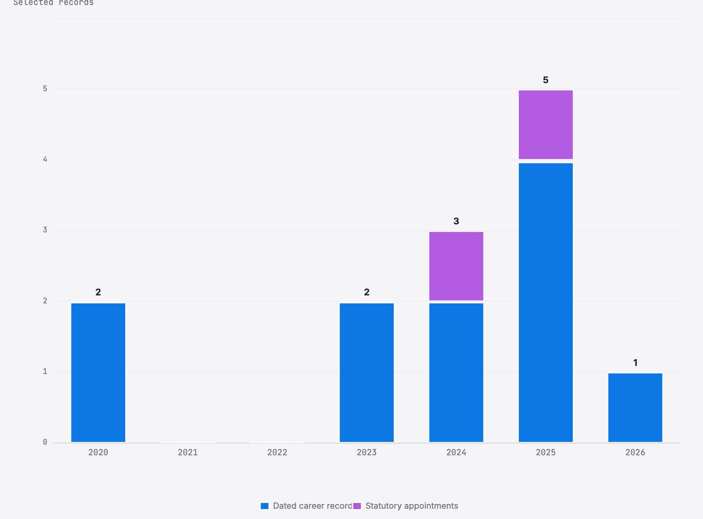
Baringa’s accounts show average membership rising from 98 in FY2021 to 178 in FY2025. RBB went from 20 to 18 over the same period. The difference is visible in the member notes even where individual promotion dates are unknown.
Comparable start and end dates are needed to verify the tenure figures. View the archived chart.
An average membership count and a register of who joined or left give two views of a partnership. The statutory register dates appointments and departures for particular legal entities.
One departure on RBB’s register is Vitaly Pruzhansky, whose membership ended on 1 April 2025.
The age comparison needs a verified set of birth and appointment dates for consistent roles. View the archived chart.
Both promotion and lateral recruitment can build expert-witness practices. The career records below follow selected routes and distinguish hiring announcements, confirmed starts and legal appointments.
The chronology points back to 2002, when Ridyard, Bishop and Baker established RBB with a team of 16.
Selected events in the project chronology, 2000 to 2026.
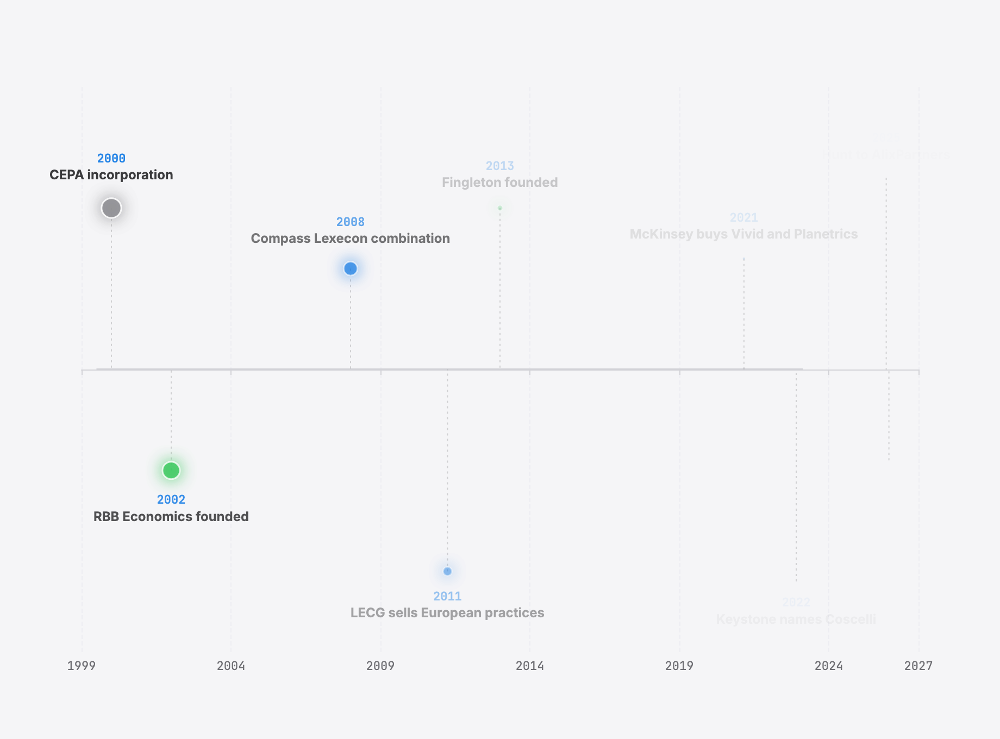
Two events are easily confused: LECG’s collapse in 2011 and Fingleton’s launch in 2013. During the wind-down, LECG sold European practices to FTI, with its European competition work joining Compass Lexecon. Two years later, in a separate event, John Fingleton, the OFT’s former chief executive, founded a competition-policy boutique under his own name.
Keystone built a European practice. It announced Andrea Coscelli as co-head of Europe and Stefan Hunt to build its European data and technology capability. AlixPartners announced Hunt’s appointment on 3 December 2025. His statutory membership at AlixPartners UK LLP took effect on 2 December.
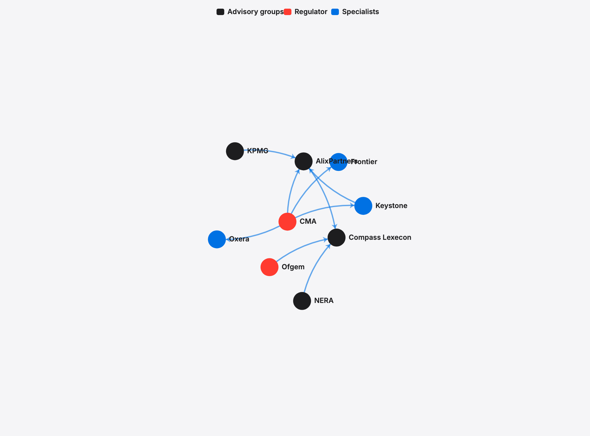
The timeline records events. The network follows individual routes. The source table records which date each entry represents.
Econic Partners’ February 2025 launch release names economists with previous roles at Compass Lexecon, alongside hires from other firms and institutions.
The career file records selected moves from the CMA, including to Keystone, Oxera, Frontier and AlixPartners. It does not measure the regulator’s net loss or gain of staff.
One route into Frontier is Mike Walker’s move from the CMA, announced in October 2025 and effective 5 January 2026. RBB’s Benoît Durand worked in the European Commission’s competition directorate before joining RBB as a partner in 2008. He became an LLP member on 1 April 2011.
First, selected foundations and incorporations. Then the ownership chain linking FTI, LECG and the two Lexecons.
Press play, or drag the slider, to reveal sourced milestones. Each bar begins at the event named in its note.
FTI acquired the US Lexecon assets and COMPASS separately. They combined in 2008. The London Lexecon followed a separate ownership path.
Arrows show the two US businesses combining and the later transfer of LECG’s European practice. The separate London Lexecon row shows its trading and acquisition years.
The tracked dataset fits in one SQLite database and runs on a laptop.
Companies House supplies the firm-level financial and registry figures; market comparisons and deal notes are attributed separately. No firm was contacted, no interview conducted and no informant cultivated. The data was already filed, indexed and public in Cardiff. Statutory documents largely reconstruct the project’s £2.44bn selected-entity total. They do not turn it into an estimate of sector revenue.


The catalogue has seven segments: policy contains 35 firms, regulation 17 and macro forecasting 16. Litigation and competition contribute another 15, including several high-revenue firms.
Where revenue is visible, it determines block size. The largest rectangles belong to FTI Consulting, Baringa, AlixPartners and A&M Europe. Economics specialists selling analysis, expert reports and witness evidence occupy medium-sized blocks in their own colour band.
Firms without a checked revenue line appear as small, equal grey tiles. Their size is only a visual placeholder.
The revenue ranking measures what the selected accounts expose. The rest of the catalogue matters, but cannot be sized cleanly.